tizk构建思维导图
首先需要调用宏包：
\usetikzlibrary{mindmap}这个包提供了绘制思维导图的样式
1. 综述：
这个宏包的目的是使思维导图的创建更容易。
每个思维导图都应该放在一个范围或一幅使用思维导图样式的图片中。此样式有一个内置的样式。
TikZ的思维导图库生成的思维导图看起来有点不同于标准的思维导图:虽然大概念仍然是一个圆，但是相关的概念也被描述为较小的圆。
整体效果在视觉上是相当令人愉悦的，但是当读者看到这个库创建的图片时，他们可能不会立即想到思维导图。
2.思维导图的样式(style)
每个思维导图都应该放在一个范围或一幅使用思维导图的样式的图片中。
mindmap
对所有图片或至少包含思维导图的图片中使用此样式。 它安装了一整套对绘制思维导图有用的设置。
具体的我们看例子
\documentclass[tikz]{standalone} \usepackage{xcolor} %=============设置中文=====================% \usepackage[UTF8]{ctex} %=============调用数学包===================% \usepackage{amsmath} %=============调用tikz画图包===============% \usepackage{tikz} %=============调用mindmap包===============% \usetikzlibrary{mindmap} %================正文====================% \begin{document} \tikz[mindmap,concept color=red!50] \node[concept] {主图} child[grow=right] %%%%%%%%设置子图的位置在右边%%%%% {node[concept] {子图}}; \end{document}
图的大小是预先定义好的，中等大小的思维导图可以放在一张A4纸上。
效果图
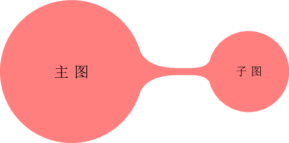
- every mindmap
这种风格包括思维导图风格。更改此样式以向思维导图添加特殊设置
这里的every可以是 large,huge等等
\documentclass[tikz]{standalone}
\usepackage{xcolor}
%=============设置中文=====================%
\usepackage[UTF8]{ctex}
%=============调用数学包===================%
\usepackage{amsmath}
%=============调用tikz画图包===============%
\usepackage{tikz}
%=============调用mindmap包================%
\usetikzlibrary{mindmap}
%=============正文================%
\begin{document}
\begin{tikzpicture}[mindmap,concept color=blue!80]
\node [concept]{主图 concept};
\node [extra concept]at (5,0) {额外 concept};%at (5,0)设置额外concept的位置
\end{tikzpicture}
\end{document} 效果图
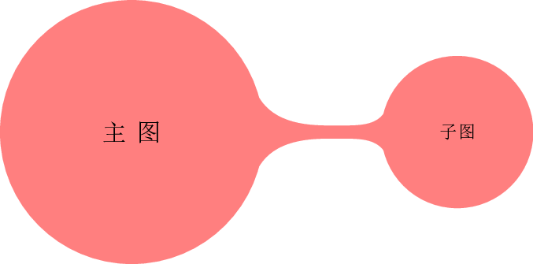
large mindmap
这种样式包括思维导图样式，但是另外改变了概念和距离的默认大小，这样中等大小的思维导图适合一个A3大小的页面**(A3大小的页面是A4大小的两倍)**
huge mindmap
这种风格会导致图更大，最好与A2及以上的纸张搭配使用（同样的A2大小的页面是A3大小的两倍）
3.Concepts Nodes
思维导图的基本对象在TikZ中被称为concepts（概念）。
下面介绍Concepts（概念）
3.1 Isolated Concepts(孤立概念)
以下风格影响Isolated Concepts(孤立概念)是如何呈现的:
style=concept(默认样式)
尽管某些样式（例如多余的概念）会自动安装此样式，但该样式应与所有作为概念的nodes(节点)一起使用。
基本上，这种样式使nodes(概念)节点变成圆形，并安装concepet（概念）颜色的统一颜色，请参见下文。 此外，每个concepts概念都称为样式。
\documentclass[tikz]{standalone} \usepackage{xcolor} %=============设置中文=====================% \usepackage[UTF8]{ctex} %=============调用数学包===================% \usepackage{amsmath} %=============调用tikz画图包===============% \usepackage{tikz} %=============调用mindmap包================% \usetikzlibrary{mindmap} %=============正文================% \begin{document} \tikz[mindmap,concept color=red!50] \node [concept] {一些concept(概念)}; \end{document}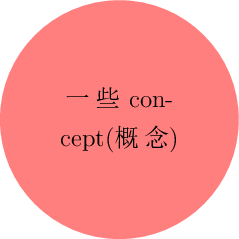
style=every concept
为了更改concept(概念)nodes(节点)的外观，应更改此样式.比如
large concept但是请注意，对于某些连接而言，concept(概念)的颜色应该统一，因此您不应使用此选项更改概念的颜色或绘制/填充状态。 它对于更改文本颜色和字体很有用。
concept colot=某个颜色
这个选项告诉TikZ应该使用某种颜色来填充和描边concept（概念）。
这个选项与将每个concept（概念）设置为所需的颜色之间的区别是，这个选项允许TikZ跟踪concept（概念）使用的颜色。
在两个连接的concept（概念）之间更改颜色时，TikZ可以自动创建一个可以在新旧概念颜色之间进行平滑过渡的阴影。
style=extra concept
这种风格是为那些不属于“思维导图树”的concept(概念)而设计的，但是要站在它的旁边。
通常，它们将具有 比较淡的颜色，且尺寸也较小。 为了使这些concept(概念)统一出现，并在代码中指出这些concept(概念)是多余的，可以使用此样式。
\documentclass[tikz]{standalone} \usepackage{xcolor} %=============设置中文=====================% \usepackage[UTF8]{ctex} %=============调用数学包===================% \usepackage{amsmath} %=============调用tikz画图包===============% \usepackage{tikz} %=============调用mindmap包================% \usetikzlibrary{mindmap} %=============正文================% \begin{document} \begin{tikzpicture}[mindmap,concept color=blue!80] \node [concept]{主图 concept}; \node [extra concept]at (5,0) {额外 concept};%at (5,0)设置额外concept的位置 \end{tikzpicture} \end{document}效果图
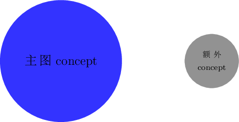
style=every extra concept
更改此样式以更改额外concept(概念)的外观。同样的every可以是
large,huge等样式
3.2Concepts in Trees
正如之前所指出的,tikz假设你的思维导图是用child建立的。有许多选项会影响concepts概念在树的不同级别上的呈现方式。
style=root concept(主图)
这种样式用于思维导图树的根。通过添加一些东西，你可以改变思维导图的根是如何表现的。
\documentclass[tikz]{standalone} \usepackage{xcolor} %=============设置中文=====================% \usepackage[UTF8]{ctex} %=============调用数学包===================% \usepackage{amsmath} %=============调用tikz画图包===============% \usepackage{tikz} %=============调用mindmap包================% \usetikzlibrary{mindmap} %=============正文================% \begin{document} \tikzstyle{root concept}+=[concept color=blue!80,minimum size=3.5cm] \tikz[mindmap] \node [concept] {Root concept(主图)}; \end{document}效果图
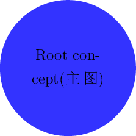
请注意，large mindmap之类的样式会重新定义这些样式，因此你应该仅在图片内部向此样式添加一些内 容。
style=level 1 concept(第一层图)
思维导图样式将此样式添加到1级样式中，这意味着思维导图树的第一级子元素将使用这种风格。
\documentclass[tikz]{standalone} \usepackage{xcolor} %=============设置中文=====================% \usepackage[UTF8]{ctex} %=============调用数学包===================% \usepackage{amsmath} %=============调用tikz画图包===============% \usepackage{tikz} %=============调用mindmap包================% \usetikzlibrary{mindmap} %=============正文================% \begin{document} \tikzstyle{root concept}+=[concept color=blue!80]%设定主图样式 \tikzstyle{level 1 concept}+=[concept color=red!50] %设定第一层子图样式 \tikz[mindmap] \node [concept] {主图（Root concept）} child[grow=30] {node[concept] {第一层子图1} child {node[concept] {第二层子图1}}} child[grow=0 ] {node[concept] {第一层子图2} child {node[concept] {第二层子图2}}}; \end{document}
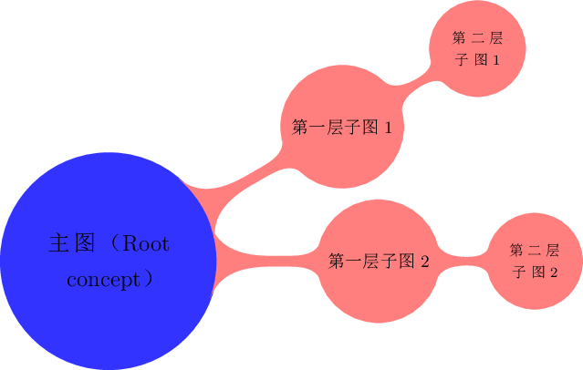
style=level 2 concept(第二层图)
和style=level 1 concept(第一层图)一样，作用在第二层图上
同理还有style=level n concept(第n层图)
作用在第n层图上
concept color=某个颜色
我们已经看到，这个选项用于改变concept（概念）的颜色。
现在我们来看看它在concept（概念）的子（child）节（nodes）点上使用时的效果。
通常，此选项仅更改子项（child）的颜色。 但是，如果将选项作为子（child）操作的选项（而不是节点（nodes）操作的选项，也不是通过层1样式作为所有子选项的选项），则TikZ会平滑地将颜色过度，看例子。
\documentclass[tikz]{standalone} \usepackage{xcolor} %=============设置中文=====================% \usepackage[UTF8]{ctex} %=============调用数学包===================% \usepackage{amsmath} %=============调用tikz画图包===============% \usepackage{tikz} %=============调用mindmap包================% \usetikzlibrary{mindmap} %=============正文================% \begin{document} \tikz[mindmap,concept color=blue!80] \node [concept] {Root concept} %设置子图1颜色为red child[concept color=red,grow=30] {node[concept] {Child concept(子图1)}} %设置子图1颜色为orange child[concept color=orange,grow=0] {node[concept] {Childconcept(子图2)}}; \end{document}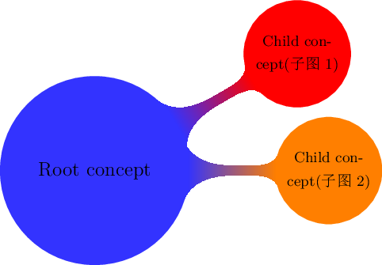
为了让所有不同层次的子图都有不同的颜色，需要一点小操作:
\documentclass[tikz]{standalone} \usepackage{xcolor} %=============设置中文=====================% \usepackage[UTF8]{ctex} %=============调用数学包===================% \usepackage{amsmath} %=============调用tikz画图包===============% \usepackage{tikz} %=============调用mindmap包================% \usetikzlibrary{mindmap} %=============正文================% \begin{document} \tikzstyle{root concept}+=[concept color=blue] \tikzstyle{level 1 concept}+=[set style={{every child}=[concept color=blue!50]}] \tikz[mindmap,text=white] \node [concept] {Root concept(主图)} child[grow=30] {node[concept] {child(子图1)}} child[grow=0 ] {node[concept] {child(子图2)}}; \end{document}
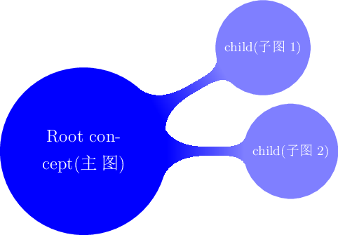
4.连接概念（concept）
4.1 简单连接
连接两个概念(concept）最简单的方法是在它们之间划一条线。为了使这些线条具有一致的外观，在绘制这些线条时，建议使用以下风格:
style=concept connection
此样式可用于两个概念（concept)之间的线。请随意重新定义此样式。
当你需要在主思维导图绘制完成后连接概念(concept)时，问题就出现了.在这种情况下，你会希望连接线位于主思维导图的后面。但是，只有在确定了概念的坐标之后才能画线。在这种情况下，您应该将连接线放置在一个背景层上，如下面的示例所示:
\documentclass[tikz]{standalone} \usepackage{xcolor} %=============设置中文=====================% \usepackage[UTF8]{ctex} %=============调用数学包===================% \usepackage{amsmath} %=============调用tikz画图包===============% \usepackage{tikz} %=============调用mindmap包================% \usetikzlibrary{mindmap,backgrounds}%这里需要加backgrounds不然就不行 %=============正文================% \begin{document} \pgfdeclarelayer{background} \pgfdeclarelayer{foreground} \tikzstyle{root concept}+=[concept color=blue!20,minimum size=2cm] \tikzstyle{level 1 concept}+=[sibling angle=45] %子图分别旋转45度 \begin{tikzpicture}[mindmap] \node [concept] {主图} [clockwise from=45] child { node[concept] (c1) {子图1}} child { node[concept] (c2) {子图2}} child { node[concept] (c3) {子图3}}; \begin{pgfonlayer}{background} \draw [concept connection] (c1) edge (c2) %子图1连接子图2 edge (c3) %子图1连接子图3 (c2) edge (c3);%子图2连接子图3 \end{pgfonlayer} \end{tikzpicture} \end{document}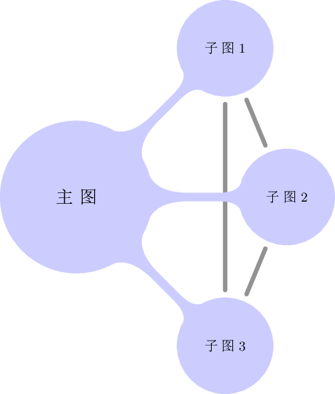
4.2The Circle Connection Bar Snake（实在不知道怎么翻译）
除了在两个概念之间建立简单的界线外，你还可以在两个节点之间添加一条稍微有机的端点。 默认情况下，这些条也用作思维导图树中父级的边缘。
为了绘制条形图，使用了一条特殊的snake，该蛇在mindmap库中定义：
Snake=circle connection bar
这条snake可以用来连接两个圆圈。 snake的起点应在第一个圆的边界上，终点应在第二个圆的边界上。 以下两个宏初始化圆圈的大小：
\pgfsnakecirclestartradius\pgfsnakecircleendradius
此外，以下两个宏会影响snake：
\pgfsnakesegmentamplitude\pgfsnakesegmentangle
snake本身将是一条路径，该路径相对于连接圆心的线以指定角度从第一个圆的边界开始。
然后，路径变为矩形，其厚度由振幅确定。
最后，路径在第二个圆上以相同的角度结束。
\documentclass[tikz]{standalone}
\usepackage{xcolor}
\usepackage{tikz}
%=============调用mindmap包================%
\usetikzlibrary{mindmap,backgrounds,snakes}
%=============正文================%
\begin{document}
\begin{tikzpicture}
[decoration={start radius=1cm,end radius=.5cm,amplitude=2mm,angle=30}]
\fill[blue!20] (0,0) circle (1cm);
\fill[red!20] (2.5,0) circle (.5cm);
\filldraw [draw=red,fill=black,
decorate,decoration=circle connection bar] (1,0) -- (2,0);
\end{tikzpicture}
\end{document}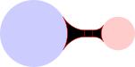
可以看到，snake由三部分组成，并不是真正有用的绘画。然而，如果你只填充snake，如果你使用与圆圈相同的颜色，效果会更好。
\documentclass[tikz]{standalone}
\usepackage{xcolor}
\usepackage{tikz}
%=============调用mindmap包================%
\usetikzlibrary{mindmap,backgrounds,snakes}
%=============正文================%
\begin{document}
\begin{tikzpicture} [blue!50,decoration={start radius=1cm, end radius=.5cm,amplitude=2mm,angle=30}]
\fill (0,0) circle (1cm);
\fill (2.5,0) circle (.5cm);
\fill [decorate,decoration=circle connection bar] (1,0) -- (2,0);
\end{tikzpicture}
\end{document}
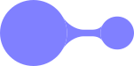
注意稍微奇怪的外部sep = 0pt。 这是必需的，以便使snake位于实心圆的边界上，而不是在描边圆的边界上（实心圆稍大，而这个稍大的大小恰好是我们用来掩盖舍入误差的边界）。
4.3The Circle Connection Bar To-Path
圆形连接条snake使用起来有点复杂。特别指定的半径是相当麻烦的(振幅和角度可以一劳永逸地设置)。由于这个原因，mindmap库定义了一个特殊的to-path，它为您执行必要的计算。
style=circle connection bar
这种风格安装了一个相当复杂的to-path。与普通的路径不同，此路径需要将路径的起点和目标命名为形状圆的节点—如果不是这样，则此路径将产生错误。
假设开始和目标是圆，到路径将首先计算这些圆的半径（通过测量从中心锚点到边界上某个锚点的距离），并
\ pgfsnakecirlce…相应的宏。接着，填充选择被 设置为概念颜色，而draw = none被设置。蛇被设置为连接栏。最后，包括以下样式：style=every circle connection bar
重新定义此样式可以将圆形连接栏的外观更改为路径。
\documentclass[tikz]{standalone} \usepackage{xcolor} %=============设置中文=====================% \usepackage[UTF8]{ctex} %=============调用数学包===================% \usepackage{amsmath} %=============调用tikz画图包===============% \usepackage{tikz} %=============调用mindmap包================% \usetikzlibrary{mindmap,backgrounds,snakes} %=============正文================% \begin{document} \begin{tikzpicture}[concept color=blue!50,blue!50,outer sep=0pt] \node (n1) at (0,0) [circle,minimum size=2cm,fill,draw,thick] {}; \node (n2) at (2.5,0) [circle,minimum size=1cm,fill,draw,thick] {}; \path (n1) to[circle connection bar] (n2); \end{tikzpicture} \end{document}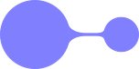
请注意，一个选项路径连接条在单个\ path中不能同时操作多个。 而是使用edge操作创建多个连接，并且此操作为每个edge创建一个新作用域
在思维导图中，有时我们希望颜色从一种概念颜色变为另一种。 然后，
理想情况下，连接条应由这两种颜色之间的平滑过渡组成。 如果您“手工”尝试使用阴影来正确地进行此操作，则有些棘手，因此，思维导图库提供了一个特殊的选项来简化此过程。circle connection bar switch color=from (first color) to (second color)
此样式的作用类似于圆形连接栏。 唯一的区别是，不是使用单色填充路径，而是使用阴影
\documentclass[tikz]{standalone} \usepackage{xcolor} %=============调用mindmap包================% \usetikzlibrary{mindmap,backgrounds,snakes} %=============正文================% \begin{document} \begin{tikzpicture}[outer sep=0pt] \node (n1) at (0,0) [circle,minimum size=2cm,fill,draw,thick,red] {}; \node (n2) at (30:2.5) [circle,minimum size=1cm,fill,draw,thick,blue] {}; \path (n1) to[circle connection bar switch color=from (red) to (blue)] (n2); \end{tikzpicture} \end{document}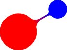
4.4Tree Edges
大多数情况下，将思维导图构建为树时，思维导图中的概念会自动连接。 原因是思维导图安装了一个圆形连接栏路径作为父路径的边缘。 另外，mindmap选项可以处理诸如设置正确的绘制和外部sep设置之类的事情。
详细地讲，mindmap选项将边缘设置为从父路径到使用to-path的路径。
圆形连接栏，用于连接父节点和子节点。 概念颜色选项（在本地）通过使用圆形连接栏开关颜色来更改此颜色，而将“原色”设置为旧的（父级）概念色，将“原色”设置为新的（子级）概念色。 这是当您向子命令提供概念颜色选项时，颜色将从父级的概念颜色更改为指定的颜色。
下面是这样构建树的一个例子:
\documentclass[tikz]{standalone}
\usepackage{xcolor}
%=============设置中文=====================%
\usepackage[UTF8]{ctex}
%=============调用数学包===================%
\usepackage{amsmath}
%=============调用tikz画图包===============%
\usepackage{tikz}
%=============调用mindmap包================%
\usetikzlibrary{mindmap,backgrounds,snakes}
%=============正文================%
\begin{document}
\begin{tikzpicture}
\path[mindmap,concept color=black,text=white]
node[concept] {Computer Science} [clockwise from=0]
child[concept color=green!50!black]
{
node[concept] {practical} [clockwise from=90]
child { node[concept] {algorithms} }
child { node[concept] {data structures} }
child { node[concept] {pro\-gramming languages} }
child { node[concept] {software engineer\-ing} }
}
child[concept color=blue]
{
node[concept] {applied} [clockwise from=-30]
child { node[concept] {databases} }
child { node[concept] {WWW} }
}
child[concept color=red] { node[concept] {technical} }
child[concept color=orange] { node[concept] {theoretical} };
\end{tikzpicture}
\end{document}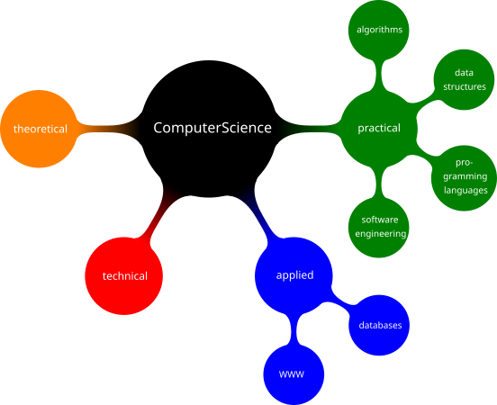
5.增加注释
注释是思维导图之外的一些文本，与其他概念不同，它只是解释思维导图中的一些内容。下面的样式主要是为了帮助代码的读者了解注释节点中的节点。
style=annotation
此样式表示节点是注释节点。它包含每个注释的样式，允许您以方便的方式更改此样式。
\documentclass[tikz]{standalone} \usepackage{xcolor} %=============设置中文=====================% \usepackage[UTF8]{ctex} %=============调用数学包===================% \usepackage{amsmath} %=============调用tikz画图包===============% \usepackage{tikz} %=============调用mindmap包================% \usetikzlibrary{mindmap,backgrounds,snakes} %=============正文================% \begin{document} \tikzstyle{every annotation}=[fill=red!20] \begin{tikzpicture}[mindmap,concept color=blue!80] \node [concept] (root) {Root concept}; \node [annotation,right] at (root.east) {The root concept is, in general, the most important concept.}; \end{tikzpicture} \end{document}
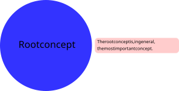
style=every annotation
该样式包含在annotation中